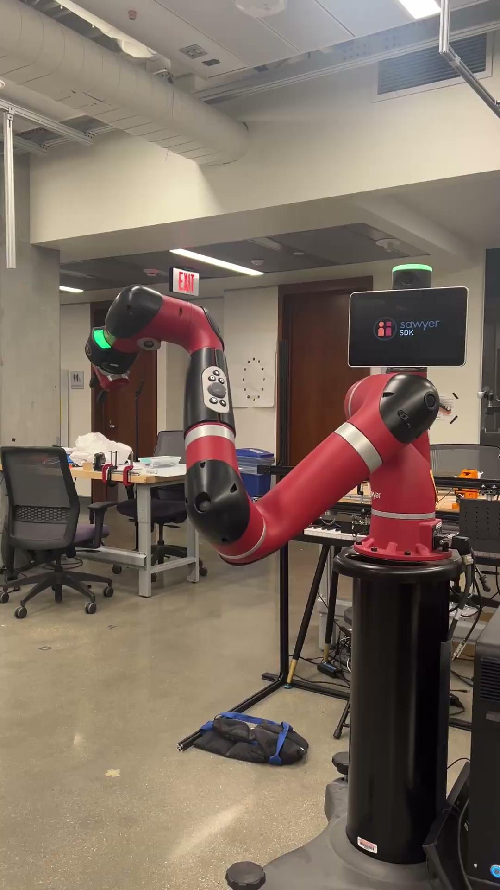
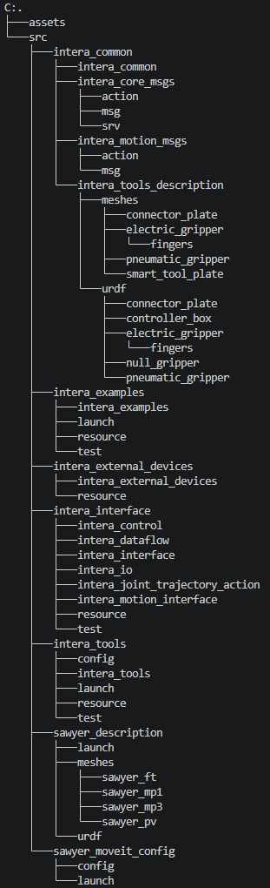

Sawyer ROS 2 SDK & ROS 1 Bridge
Porting the Sawyer software stack to ROS 2 while preserving communication with the robot's ROS 1 Intera environment.
Status: Completed · Spring 2026 (ME 499)
Overview
This project modernized the software interface for the Rethink Robotics Sawyer by porting the essential Intera SDK functionality to ROS 2. The work included the core robot interface, motion interface, example programs for validation, camera support, and a MoveIt 2 configuration.
Because the Sawyer controller still operates through ROS 1, the second half of the project focused on building a communication layer between the ROS 1 robot stack and the new ROS 2 environment.
Sawyer during ROS 2 SDK and interface testing.

Sawyer setup used to validate camera and manipulation functionality.
Challenge
The existing Sawyer software ecosystem was built around ROS 1, while the goal of this project was to expose the robot through a ROS 2-native workflow. Porting the SDK therefore involved more than changing syntax: interfaces, services, actions, message definitions, timing behavior, and motion APIs all had to remain compatible with the robot.
Communication between the two ROS generations was another major challenge. Standard bridging behavior was not enough for the full Sawyer stack, particularly for actions, so the bridge implementation had to be extended to support the required topics, services, and actions.

Ported Sawyer/Intera software structure used during development and debugging.
Approach
The SDK port focused first on reproducing the essential Intera functionality in ROS 2. The complete intera_interface and intera_motion_interface functionality was ported, along with a substantial set of examples used to test individual interfaces and simplify debugging.
A custom ROS 1 bridge fork was then used to connect Sawyer's ROS 1 stack with ROS 2. The bridge was configured to pass topics and services, and its parameter-bridge implementation was extended so actions could also be explicitly bridged. Zenoh was incorporated into the communication setup to support the cross-environment architecture.
Finally, a Sawyer MoveIt 2 configuration was generated through the MoveIt Setup Assistant and configured to match the existing ROS 1 MoveIt setup. Camera functionality was also validated for both onboard Sawyer cameras.

Bridge and ROS environment testing from the development workstation.

Runtime validation of the ROS 1-to-ROS 2 communication pipeline.
Result
The completed system successfully exposed the Sawyer's essential functionality through ROS 2. Topics, services, and actions were bridged between ROS 1 and ROS 2, both Sawyer cameras were operational, and the MoveIt 2 configuration was created and tested.
The final demonstration replayed recorded joint commands through the ROS 2 stack. Successful playback exercised the gripper, digital I/O, joint trajectory action server, and the other interfaces required for coordinated robot motion.
Sawyer during the final integrated demonstration.
Hardware validation of the ported SDK and bridge.
Repositories & Presentation
The project builds on the Sawyer SDK while adding a modified ROS 1 bridge for the ROS 1/ROS 2 communication layer. The presentation documents the completed SDK functionality, bridge work, camera integration, MoveIt 2 configuration, final demonstration, and remaining cleanup/documentation tasks.